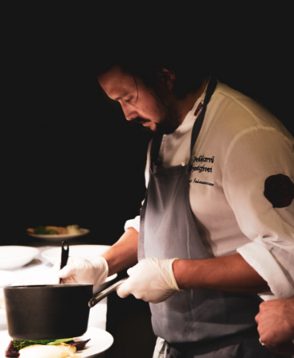
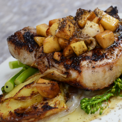
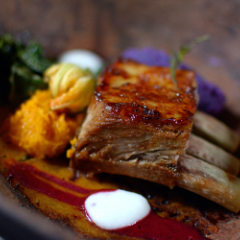
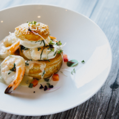
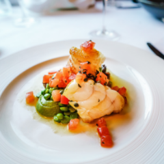

Konでは地元でとれた食材を使用しています。食材そのものの旨味を引き
出し、一品一品に生産者さんの想いや、つくり手であるオーナーシェフの
情熱を注いで皆様に提供させていただいております。
創業以来12年、皆様に愛され続けてきた味をお楽しみください。
フランス料理の代表作である魚のムニエル。
その時々で旬の魚を使ってカリっと焼き上げたお魚と、ソムリエに
よって選び抜かれた究極のいっぱいで私服の時をお過ごしください。


その時々で最高の食材を選び、料理を行います。
小前菜から前菜、ポタージュ、魚料理に肉料理、最後のデザートまで、こ
だわり抜いた当店だけのフルコースです。
時期によってメニューが異なりますので、お問い合わせください。
フランスの三ツ星レストラン“ラ・ムール”で２年間修業を積む。
帰国後、地元である熊本県に手フレンチレストラン“Kon”をオープンする。
創業より１２年、こだわりを持った料理を提供し続ける。





お待たせしました！
フランス南部のプロヴァンス地方より、新作のワイン入荷いたしました。美しい黄金色の色味とエレ
ガントな力強さを持つ白ワインです。当店の料理ととてもよくマッチします。
数に限りがございます。
Konは4月5日にオープンから12周年を迎えます。これもひとえに皆様方の多大なるご支援の賜物と心
より感謝申し上げます。つきましては、感謝の気持ちをお伝えしたく12周年パーティーを行います。
ただ今、ご予約承り中です。皆様にお会いできることを楽しみにしております。
2月14日はバレンターンデー特別メニューをご用意させていただきます。
詳細はインスタグラムをご覧ください。席に限りがございますのでお早にご予約の方よろしくお願
いいたします。
2022年明けましておめでとうございます！
昨年も大変お世話になりました。皆様のお陰で素晴らしい年にすることができました。また、本年
もよろしくお願いいたします。
皆様の笑顔にお会いできることを楽しみにしています。
本年も1年、大変お世話になりました。
皆様の大切な1日に当店を選んでいただきありがとうございました。来年もまたよろしくお願いいた
します。